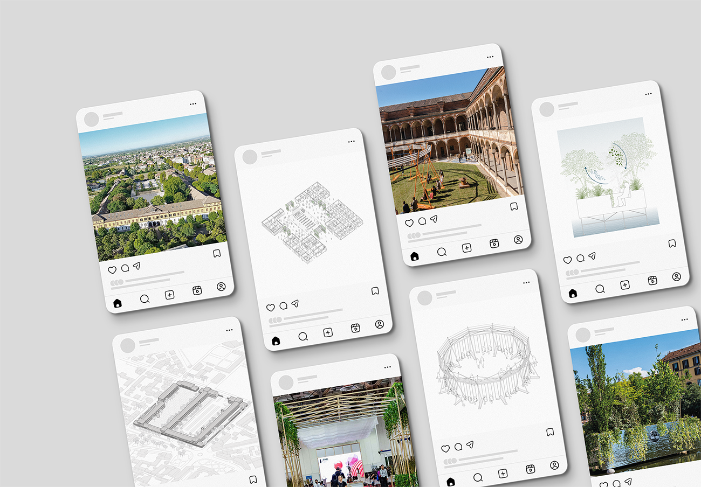

During my internship at Stefano Boeri Interiors, I collaborated directly with my supervisor in the Communication team, taking on an active and responsible role while managing tasks independently and coordinating closely on priorities and deadlines.
This experience allowed me to put what I learned at university into practice, strengthening my skills in graphic design, visual communication, and content creation, as well as enhancing my autonomy, organizational abilities, and understanding of communication as a strategic component of the design process.
My main activities focused on graphic and visual content production for the studio's communication channels, planning the Editorial Plan including static and dynamic visuals for social media. I also worked on writing captions, curating and updating the studio portfolio through image selection and text organization, and producing 2D axonometric drawings to support project communication.
These tasks strengthened my skills in graphic design, visual communication, and content creation, with particular attention to clarity, consistency, and visual storytelling.
